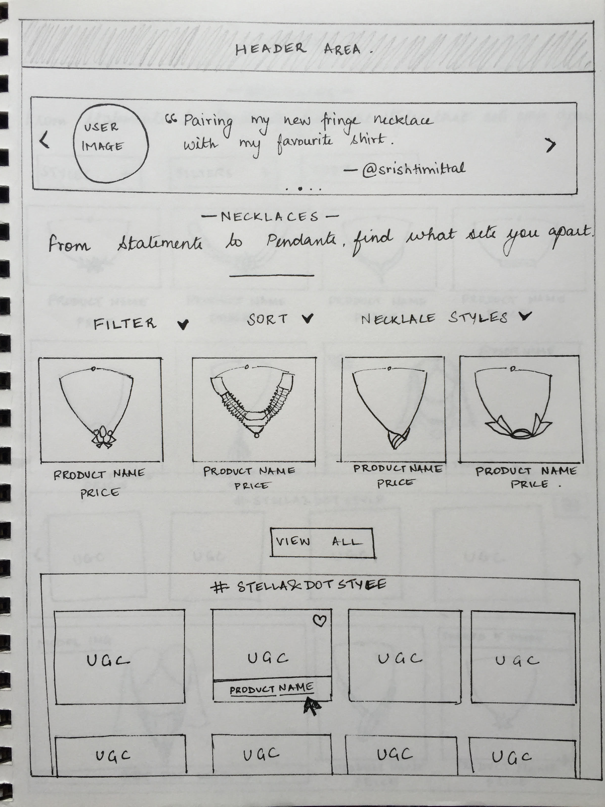
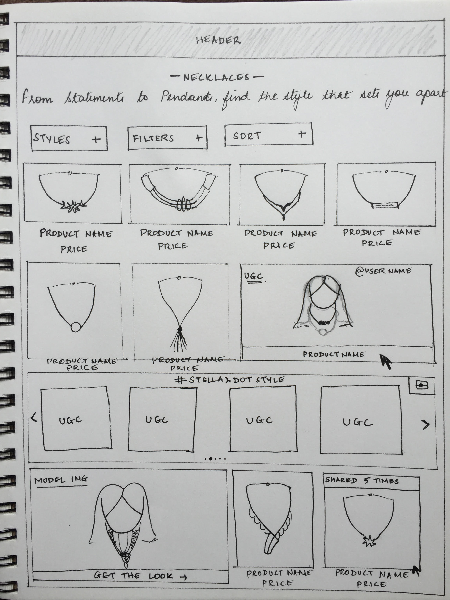

Redesign—Option 1
The first direction was to have a Slider at the top of the page displaying a user image along with her comment.
This would provide a social proof to the user as soon as she lands on the website. A “Trending Section”
after a few rows of products with curated UGC interspersed with model images, shows the product on hover.
Clean, consistent layout of inventory.
Having a trending section after a few rows of products breaks browser monotony.
Top slider should increase user interaction with popular styles, giving them immediate social proof.
Because no products have been displayed before the top slider, it might feel out of context.
Hiding inventory behind a ‘view all’ button might reduce checkout conversions as users prefer
scrolling to clicking and would not be too keen on clicking a button to see more inventory.
Above-the-fold real estate is expensive, and is being taken away by UGC.

Redesign—Option 2
UGC shown in-line with the products, with context, so when a product gas been displayed a UGC with that product will appear.
A “ticker” that shows thumbnails of curated user submitted images, along with the user’s id, and the name of the product she
is sporting. For social validation, prominently show number of times product has been bought or shared on social media.
This option maximizes chance to capture viewer’s clicks from a user image.
By adding a “shared x times” data on a hover, we are providing users with immediate social proof.
UGC in this option islinked with product images contextually and it reinforces a user’s preference immediately.
Ticker with images shared on social media breaks browsing monotony, provides a “social” avenue to capture user clicks.
Product layout may not be as clean and symmetric as Option 1.
User images need to be curated to match the look and feel of the category page.
After careful consideration of the pros and cons of both the options, I decided to use Option 2 as the direction.
